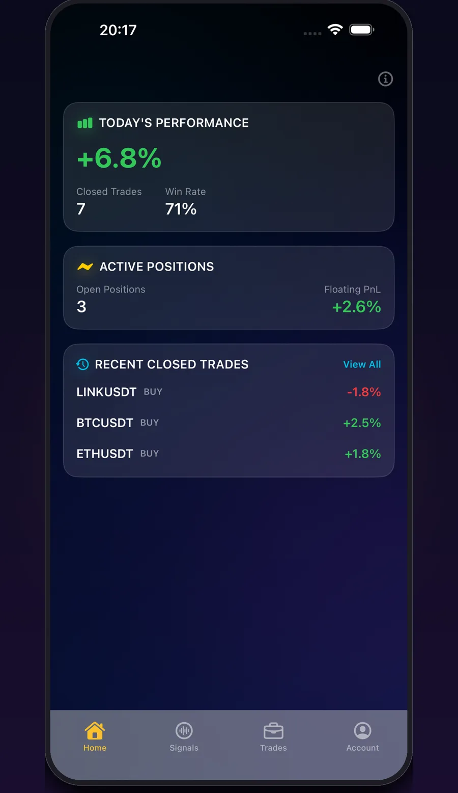
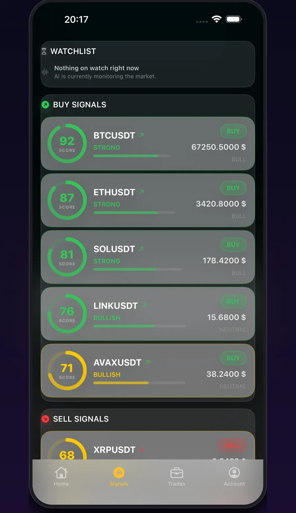
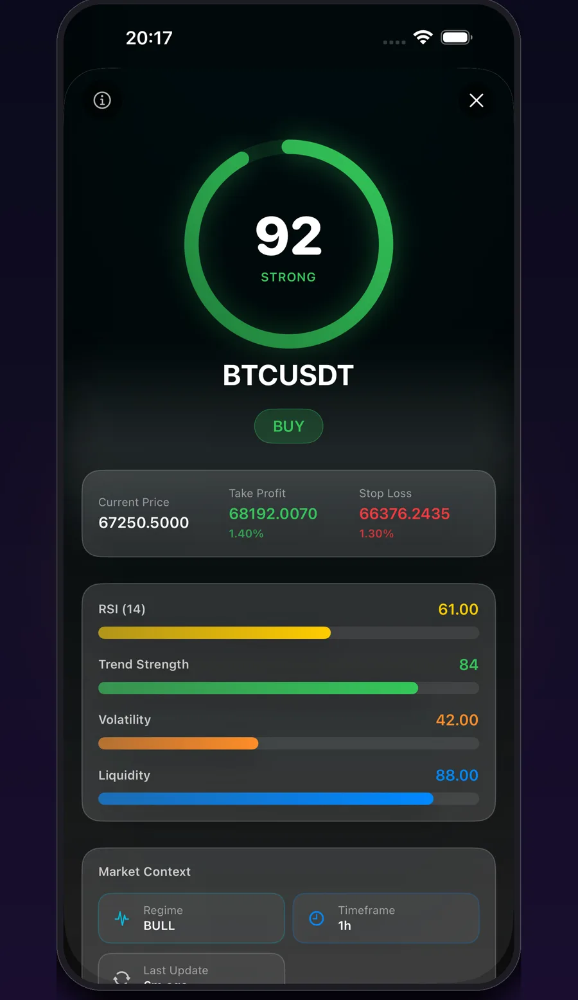
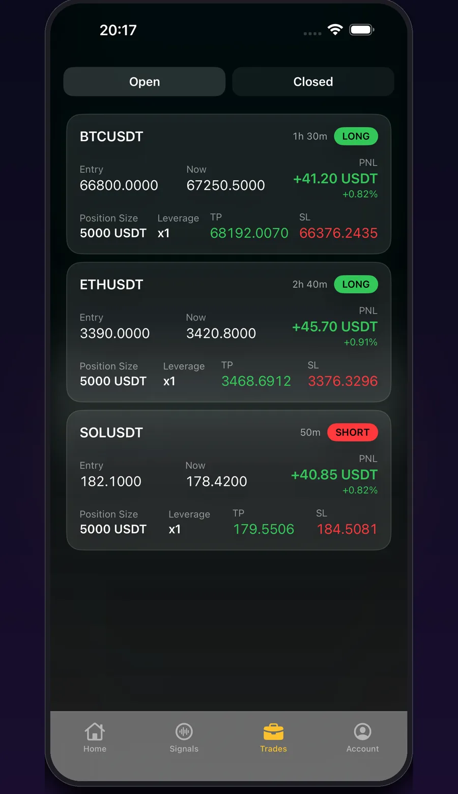
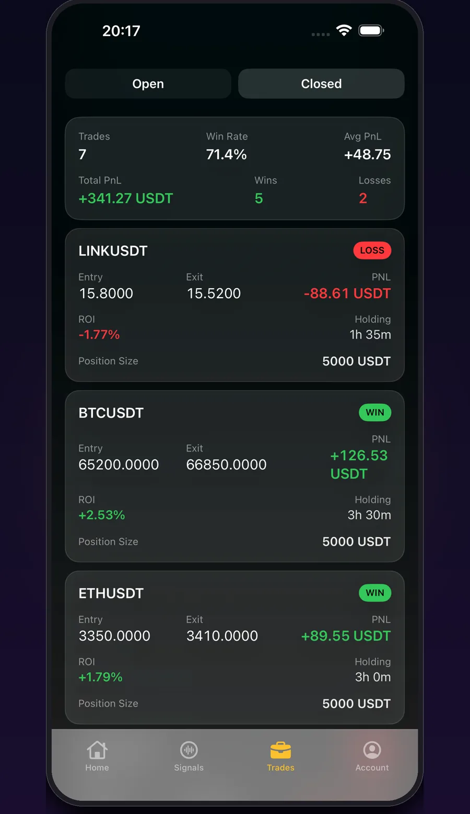
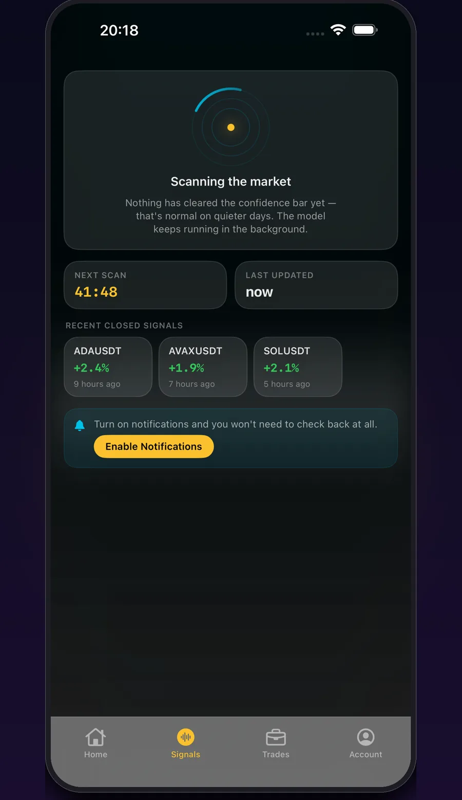
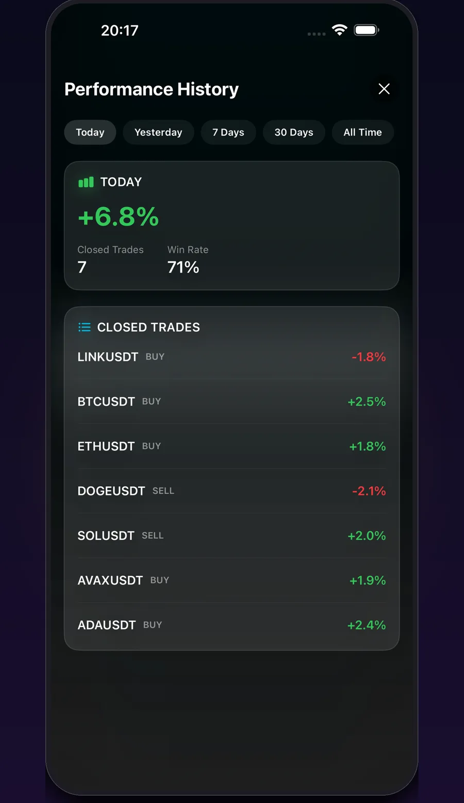

Now on the App Store
Your AI
Trading Copilot.
Real-time signals, positions, and performance — all in one place. TradePulse AI reads the market so you don't have to guess.
Free to download · iPhone & iPad


Signals
Never miss a move.
AI-scored BUY signals the moment they qualify — ranked by strength, so you know which ones matter most.

Transparency
Every signal, fully explained.
Entry, target, and stop-loss — before you ever place a trade. No black box: every score breaks down into RSI, trend strength, volatility, and liquidity.

Positions
Track every trade, live.
Real-time PnL on every open position, updated by the second — entry, size, leverage, target, and stop, all in view at once.

History
A record you can check.
Every closed trade, logged — entry, exit, ROI, and holding time. Nothing hidden, nothing summarized away.

Always on
Always watching the market.
The model keeps scanning in the background, even on quiet days. Turn on notifications and you won't need to check back at all.

TradePulse Pro
Unlock the full picture.
Complete performance history, every range, every trade. Core signals are free — Pro unlocks full history, alerts, and deeper insights.
How it works
Built to be understood, not just trusted.
Every score you see traces back to real technical analysis — not a mystery algorithm.
RSI
Momentum, measured — is a move overextended or just getting started.
Trend Strength
How convincingly price is moving in one direction.
Volatility
How much a symbol is really moving right now.
Liquidity
Whether there's real depth behind the move.
TradePulse AI is an informational tool, not financial advice. Cryptocurrency trading involves risk, and past performance does not guarantee future results. See our Privacy Policy for how your data is handled.
FAQ
Questions, answered.
Does TradePulse AI give financial advice?
No. TradePulse AI is an informational and educational tool that analyzes market data. It does not constitute financial advice, and every trading decision remains yours.
What actually powers the signal score?
Every score is built from RSI, trend strength, volatility, and liquidity, combined into a single 0–100 confidence rating with a suggested entry, target, and stop-loss.
Is TradePulse AI free?
Yes — signals, live positions, and today's performance are free. TradePulse Pro is an optional upgrade that unlocks full performance history and alerts.
Is my data private?
We don't sell, rent, or trade your personal data. See the Privacy Policy for the full details on what's collected.
Which devices does it run on?
TradePulse AI is built natively for iPhone and iPad, available now on the App Store.